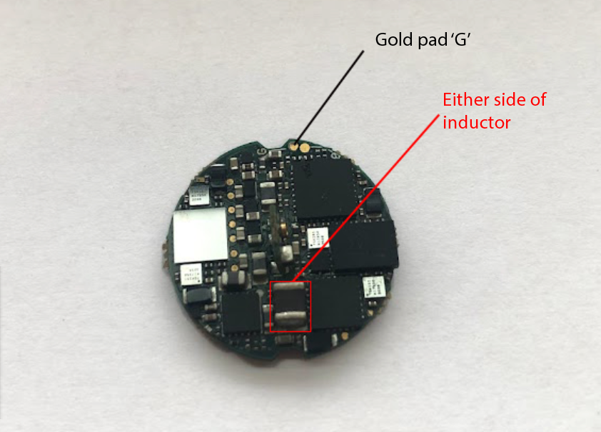

Tethered Headstage Voltages¶
The voltage on the headstage must be carefully regulated; not enough voltage and the headstage will not function reliably, too much voltage and sensitive components could be damaged. Many issues with the system can be traced back to inadequate headstage voltage supply.
Setting headstage voltage¶
A headstage has a minimum voltage requirement (5V for the 64-channel headstage) for the circuits on the board to function properly. If the voltage is far too low, the green LED on the headstage will be dim and Bonsai will not detect the headstage. Even if the LED is bright, a borderline voltage can still cause connectivity issues as the headstage occasionally dips beneath the power it needs to function properly.
The voltage output at the FMC-host can be set in Bonsai:

allowsthesecondheadstagetoconnect.)
The voltage set in Bonsai is not identical to the voltage supplied to the headstage, as some voltage drop will occur over the coaxial cable tether that connects them. The amount of voltage drop will depend on the cable properties (e.g. thickness) and even the temperature of the cable. These very thin tethers can cause large voltage drops, so that even when the voltage setting in Bonsai seems high, the headstage is only seeing 3 or 4 Volts and becomes unreliable. Voltage should therefore always be measured on the headstage itself. The voltage setting is persistent until computer power off. It gets stored in the hardware, so even after a reboot, it will be set to the latest value.
Measuring the voltage¶
Use a multimeter to probe the headstage at the two points marked below: the ground pin and either terminal of the large inductor on the 64-headstage.
Rebooting¶
If you have slowly increased the voltage supplied to a headstage, but it does not appear as a tab in the ONI-Context, try turning the voltage supply to 0 and back to the higher value before refreshing the ONI-Context.